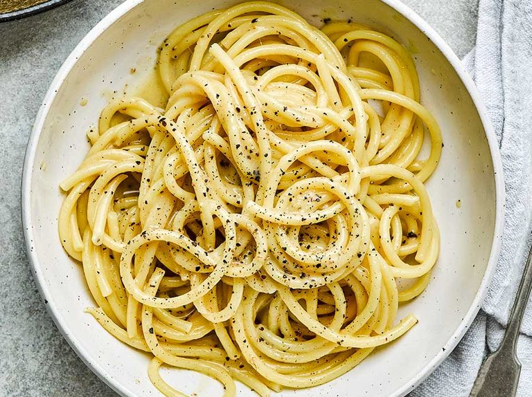

In order to make pasta follow these steps:

- boil the pasta for 8 minutes in water.
- chup one onion into small pieces
- put the chopped onion into a pan and fry them with low heat
- add your meat to the onions and cook them together for 30 minutes
- add tomato sauce and spices.
- add the pasta to the mix and mix them up.